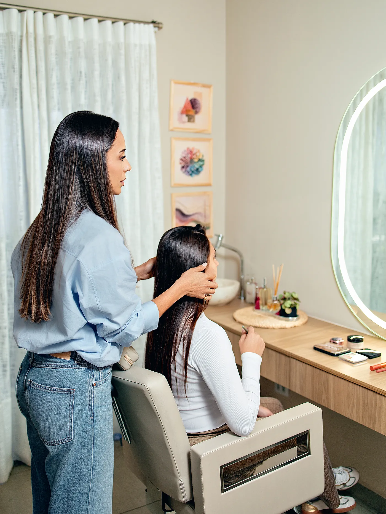

Maquiagem social
Para eventos, festas, ensaios e datas especiais. Uma make que dura, fotografa bem e respeita a sua identidade.
AgendarMaquiagem e autoimagem
Maquiagem que valoriza quem você já é. Descubra o que a sua imagem está comunicando e aprenda a se maquiar com segurança, no seu tempo e do seu jeito.
Leva 2 minutos · Gratuito · Resultado no seu WhatsApp

Estética não é futilidade.— Sui
Sobre mim
Sou a Sui, maquiadora e apaixonada por ajudar mulheres a se enxergarem com mais carinho. Acredito que a maquiagem não serve para esconder ninguém, e sim para revelar, com leveza, a melhor versão de cada uma.
No meu espaço, cada atendimento começa por entender você: sua rotina, seu estilo e o que você quer comunicar. A partir daí, a maquiagem deixa de ser um mistério e vira uma aliada do seu dia a dia.
Serviços
Do grande dia à rotina de todo dia, cada serviço é pensado para que você se sinta você mesma, só que ainda mais segura.
Para eventos, festas, ensaios e datas especiais. Uma make que dura, fotografa bem e respeita a sua identidade.
AgendarTeste prévio, planejamento do visual e acompanhamento para você viver o seu dia sem preocupação.
Consultar datasAprenda a se maquiar sozinha com técnica, usando os seus produtos e respeitando o seu tempo de rotina.
Fazer diagnósticoUma leitura do que a sua imagem comunica hoje e de como alinhá-la com quem você é e onde quer chegar.
Saber maisPortfólio
Um pouco do dia a dia no meu espaço e das mulheres que passaram pela minha cadeira.
[Depoimento real de uma cliente. Aguardando a Suellen enviar.]
[Depoimento real de uma cliente. Aguardando a Suellen enviar.]
[Depoimento real de uma cliente. Aguardando a Suellen enviar.]
Diagnóstico gratuito
Responda algumas perguntas rápidas e descubra o caminho mais simples para se maquiar sozinha com segurança.
Começar agoraAgendamento
Escolha o melhor dia e horário direto na minha agenda. Para noivas, produções especiais ou dúvidas, fale comigo pelo WhatsApp.
Ver horários disponíveis